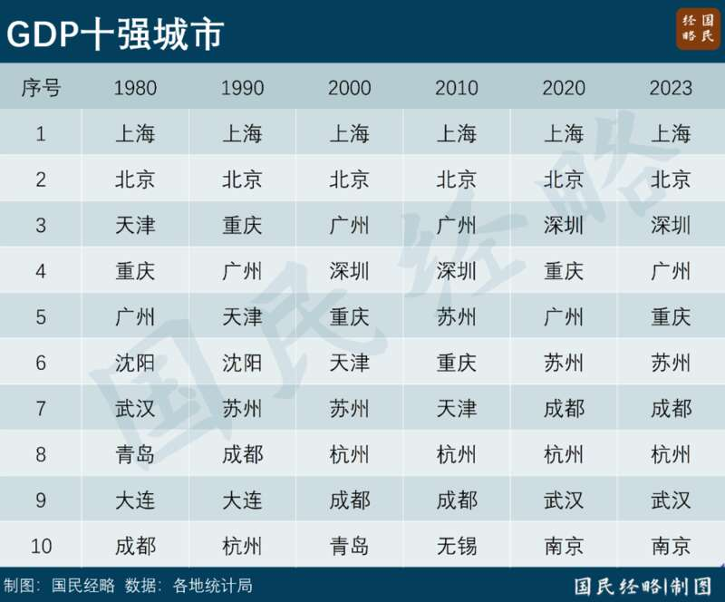
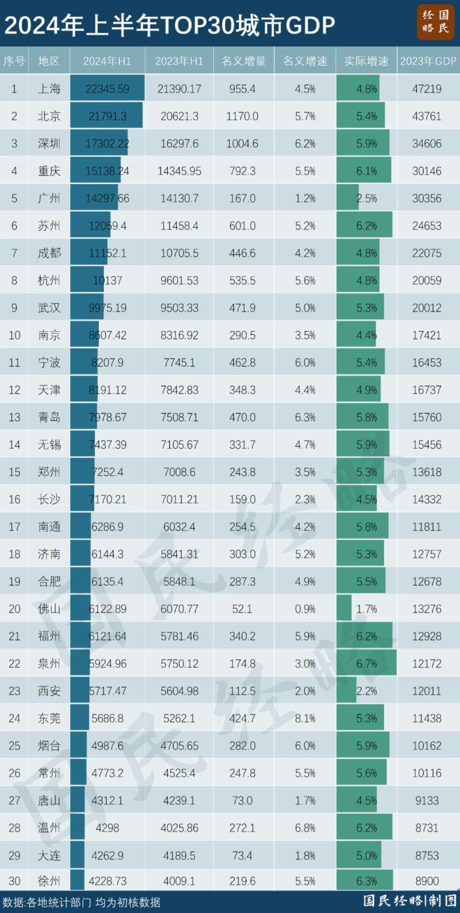
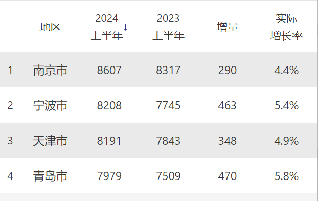
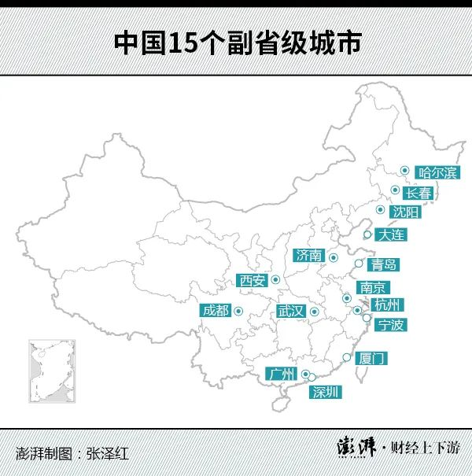
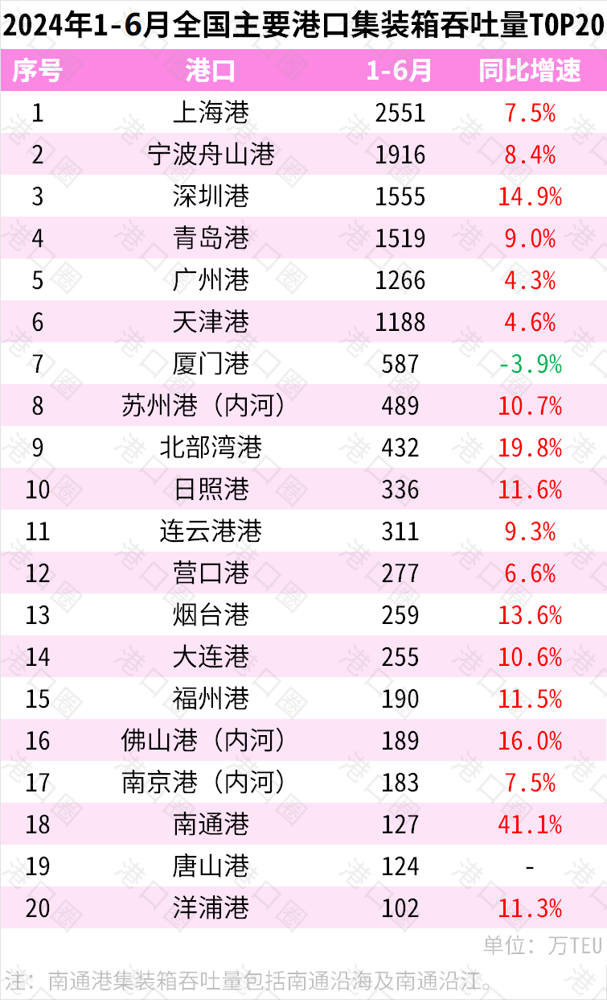
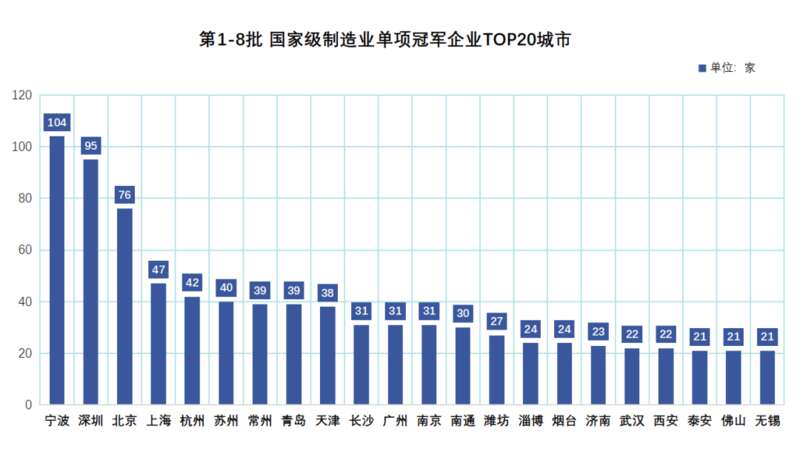
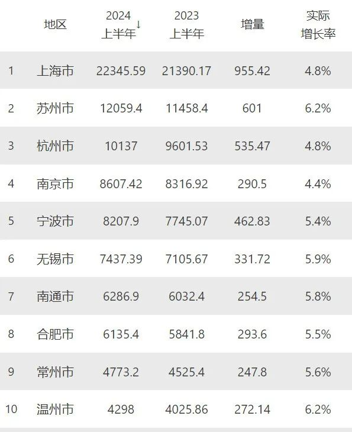
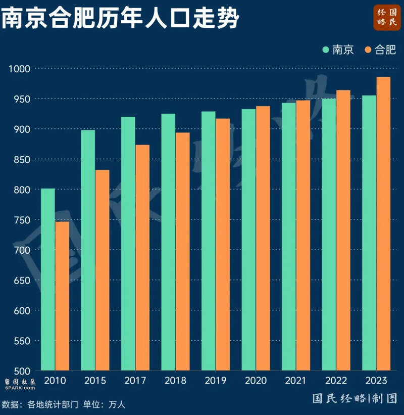

第10城之争，谁都没有独领风骚的领先优势，也没有长期碾压同类城市的底气。
十强城市的变迁，历来备受关注。自2020年南京赶超天津，自改革开放以来首次跻身GDP第10城以来，谁能站稳“守门员”之位，就成为区域经济的最大话题之一。

然而，第10城之争，最大的挑战者不是老牌直辖市天津，而是华东新区新的两匹黑马：宁波和青岛。未来，谁能守住第10城之位？01
第10城之争，再生变数。
日前，各大城市陆续公布2024年上半年GDP数据，广州与重庆第四城之争悬念再起，武汉、杭州竞争焦灼。而作为十强城市“守门员”的南京，也迎来新的追兵。先是宁波连续两个季度赶超天津，不断拉近与南京之间的差距，接着青岛奋起直追，与天津的差距再次收窄，剑指北方第二城之位。

先看宁波，离南京还有多远？今年上半年，宁波GDP达8207.9亿元，赶超天津的8191.2亿元，首次在半年度GDP上赶超天津。事实上，宁波去年一季度一度赶超天津，但上半年又被天津赶超，而这一次宁波全年能否超过天津，值得关注。与此同时，宁波同比增长5.4%，南京增长4.4%，两城之间的GDP差距，从去年同期的571亿收窄到399亿元。从全年数据来看，两城整体GDP差距，已从高峰时期的2000亿以上收窄到去年的1000亿以内，今年有望继续收窄。
再看青岛，离北方第二城还有多远？从改革开放以来，北京位居北方经济第一大市之位，而天津则是名副其实的北方第二城。如今，青岛正在一路猛追，离天津只有一步之遥，而与南京的差距也在逐步收窄。今年上半年，青岛GDP达7978.67亿元，同比增长5.8%，名义增速达到6.3%，在北方主要城市中位居前列。青岛与天津的半年度GDP差距，从去年同期的334亿元收窄到212亿元，而去年全年差距不足1000亿元。不仅如此，青岛与南京也不再是遥不可及。去年全年两城的GDP差距还有1600亿左右，今年上半年仅有628亿元。宁波、青岛与南京、天津的竞逐赛，只会越来越白热化。02
宁波、青岛，为何这么猛？
宁波、青岛一路猛追的背后，与其城市级别和性质不无关系，也离不开港口区位带来的助力。其一，宁波、青岛，都非普通地市，城市能级远高于一般城市。资料显示，我国共有15个副省级市，其中包括5个计划单列市：深圳、宁波、青岛、厦门、大连。没错，与深圳一样，宁波、青岛均集副省级市、计划单列市为一体，享有财政单列的优势，在各自省域中都是与省会分庭抗礼的存在。

在中国，更高的行政级别，更特殊的制度安排，究竟意味着什么，可谓不言而喻。副省级市，意味着更高的行政级别，远超一般地级市乃至普通省会；而计划单列市，标志着更高的财政支配权，且享受部分省级经济社会管理权限。与之对比，无论是最强地级市苏州，还是跻身工业十强市之列的无锡、佛山、东莞，都只是普通地级市。其二，宁波、青岛都拥有超级大港的天然优势，且是这一轮地缘大变局的受益者。在全球化时代，谁靠近港口，谁就接近国际市场，谁就拥有先行一步的优势，谁就拥有做大相关制造业的先机。宁波-舟山港是中国货物吞吐量第一大港、集装箱吞吐量第二大港，其综合实力与上海港不相上下。
青岛港则是新晋的北方第一大港，货物吞吐量、集装箱吞吐量双双位列全国第四，而集装箱吞吐量已赶超广州港，离深圳港只有一步之遥。一边是东北亚国际贸易中心的定位，一边是上合示范区的制度红利。借助“海铁联运”打造的内陆交通网络，青岛港得以辐射到郑州、西安乃至乌鲁木齐等更多地区。其三，宁波、青岛都是制造业大市，而工业正是这一轮经济稳增长的最大动力。衡量一个地方的制造业实力，除了工业产值、千亿产业集群之外，更重要的是专精特新“小巨人”、制造业“单项冠军”的数量。小巨人，以专业化、精细化、特色化、新颖化著称，宁波共有352家企业入围，位列全国第五；而青岛共有190家企业入围，位居前列。“单项冠军”，单项产品市场占有率位居全球前列，被誉为“隐形冠军”，宁波共有108家企业入围，超过上海深圳苏州，位居全国第一，而青岛共有37家企业，位列全国第七。
不同的是，宁波以绿色石化、高端装备、汽车零部件等产业见长，而青岛则以智能家电、交通装备、绿色石化等为主导。不过，两大城市，都是工业大市，也是外贸大市，容易受到产能周期和国际经贸形势的影响，未来经济发展难免存在波动。03
南京，何以守住第10城？
这几年南京可谓风头无两，先是赶超天津晋级第10城，接着南京都市圈获批，成为全国第一个跨省都市圈。然而，在经济、人口两条重要赛道中，南京都面临着“前有标兵，后有追兵”的局面。早在十四五规划中，南京曾立下宏大目标：到2025年常住人口突破千万、经济总量突破两万亿元，并晋级为超大城市。如今，2025年越来越近，南京想要完成这一目标，显然存在一定压力。先看经济，2023年南京GDP达到1.74万亿，今年上半年为8607.42亿元，同比增长4.4%，跑输全省和全国。

长三角各地市经济走势今年上半年，南京经济的最大拖累在于投资，主要是房地产投资带来影响。其中，1-5月，南京固定资产投资增速负增长14.2%，而占了半壁江山的房地产投资大幅下降19.9%。前几年，南京是全国楼市最火的城市之一，房价直追广州，房地产投资依赖度、卖地收入依赖度相对较高，因此楼市波动带来的冲击可见一斑。再看人口，南京一直徘徊在“千万人口俱乐部”的门口，但其人口增量却跑输向来被虹吸的合肥。过去5年，南京常住人口从924万增加到954.7万人，仅增长30万人；而同期合肥则从893.2万增加到985万，大增超过100万人。按照这一趋势，合肥未来一两年就能问鼎千万人口大市，而南京可能要等到2030年前后。

从整体发展来看，南京以钢铁、石化、汽车、电子为传统支柱产业，这些传统产业均，面临新技术、新产品洗牌的压力。不过，在培育新兴产业上，南京的软件和信息服务业跻身国内第一梯队，向着万亿级产业晋级，新型电力（智能电网）产业入选先进制造业国家队集群，业务收入规模也达到4000亿量级。需要注意的是，身为省会却地处“散装大省”，南京无法像中西部一样推进“强省会”战略；而周边工业强市林立，南京也无法成为独一无二的产业中心，面临着方方面面的拉扯。但是，南京有着其他城市所没有的优势：一是横跨苏皖两省的南京都市圈，势力范围拓展到安徽腹地。二是拥有强大的高等教育和研发优势，双一流大学、科研院所实力与京沪齐名。三是新产业布局已成气候。新能源、新型电力、人工智能、集成电路、新型显示等产业转型，稳步向前。当然，第10城之争，谁都没有独领风骚的领先优势，也没有长期碾压同类城市的底气。要知道，大国博弈搅动的冲击波，地缘变迁带来的涟漪，新一轮科技革命带动的大洗牌，城市从高增长向高质量发展的转型，都让未来充满巨大的不确定性。谁能最终站稳“守门员”且更进一步，我们拭目以待。